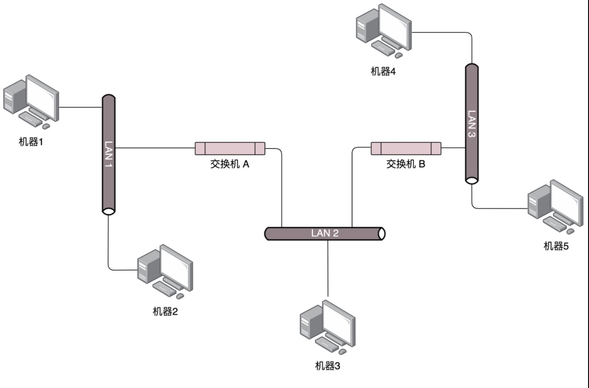
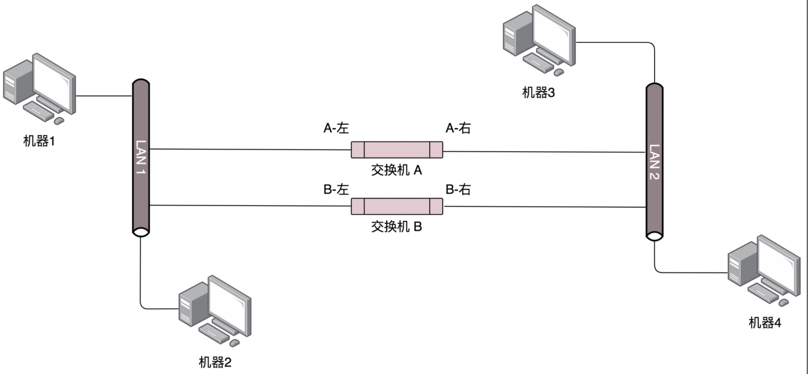
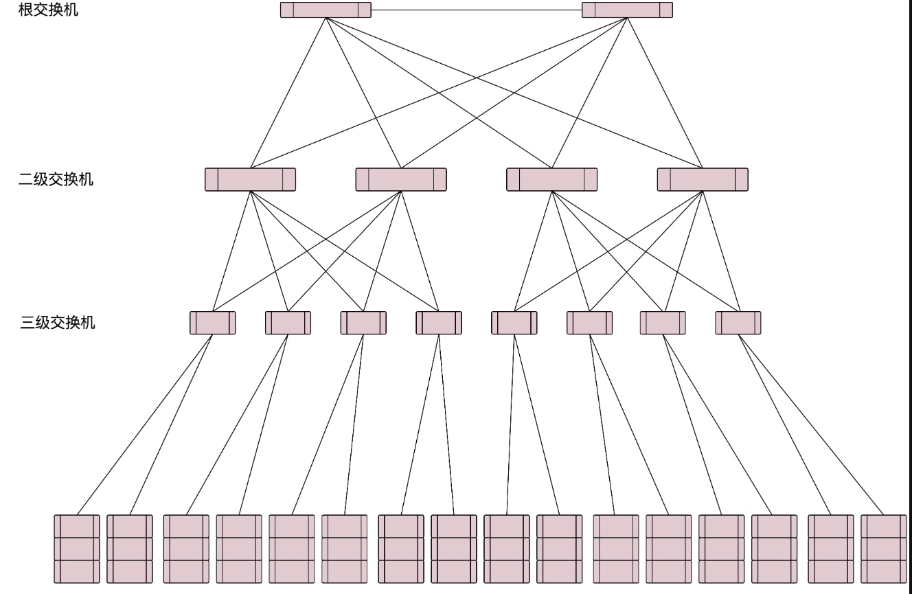
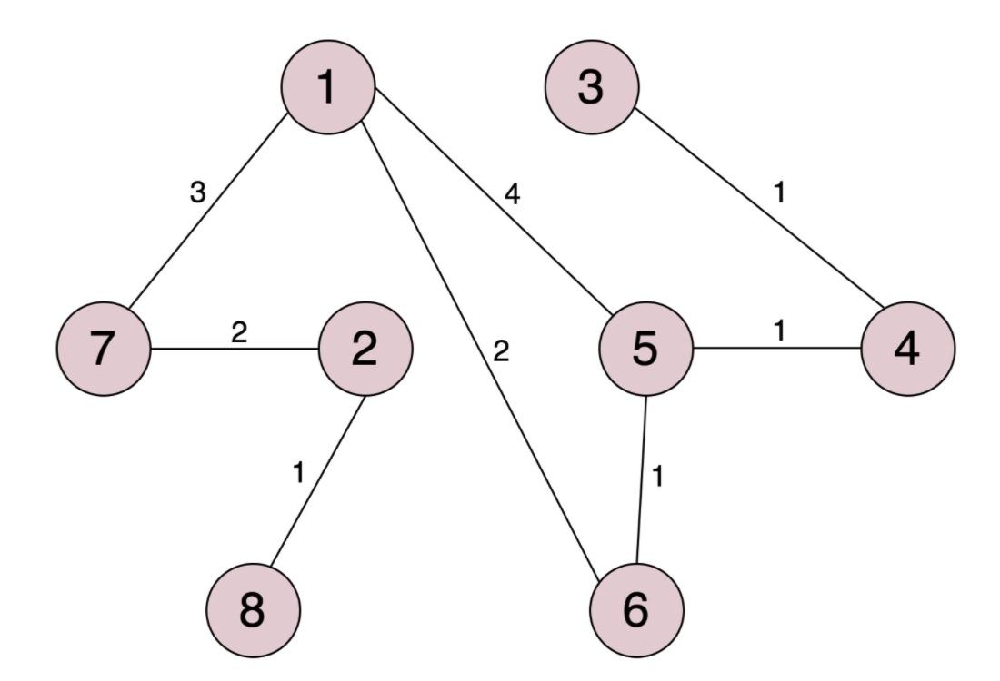
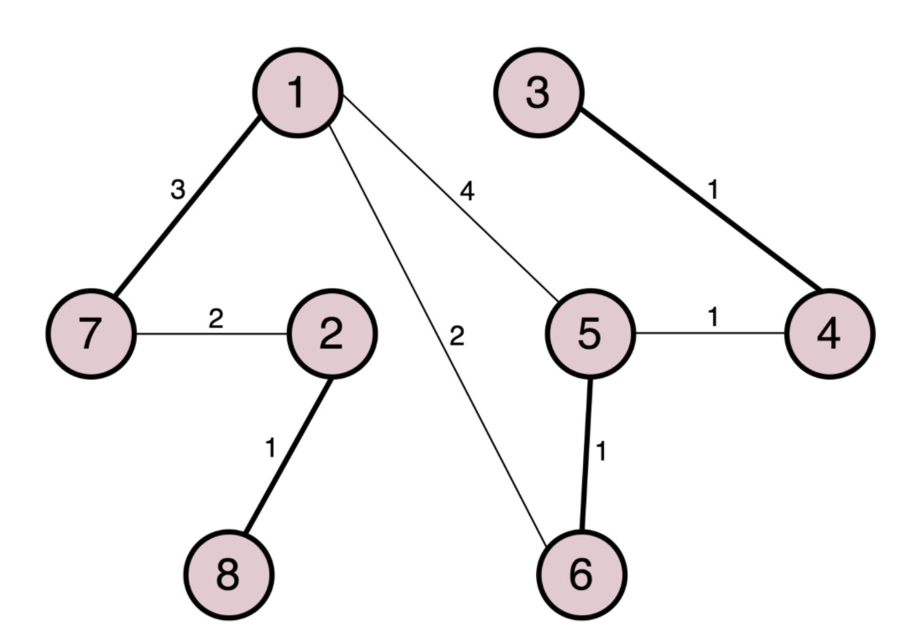
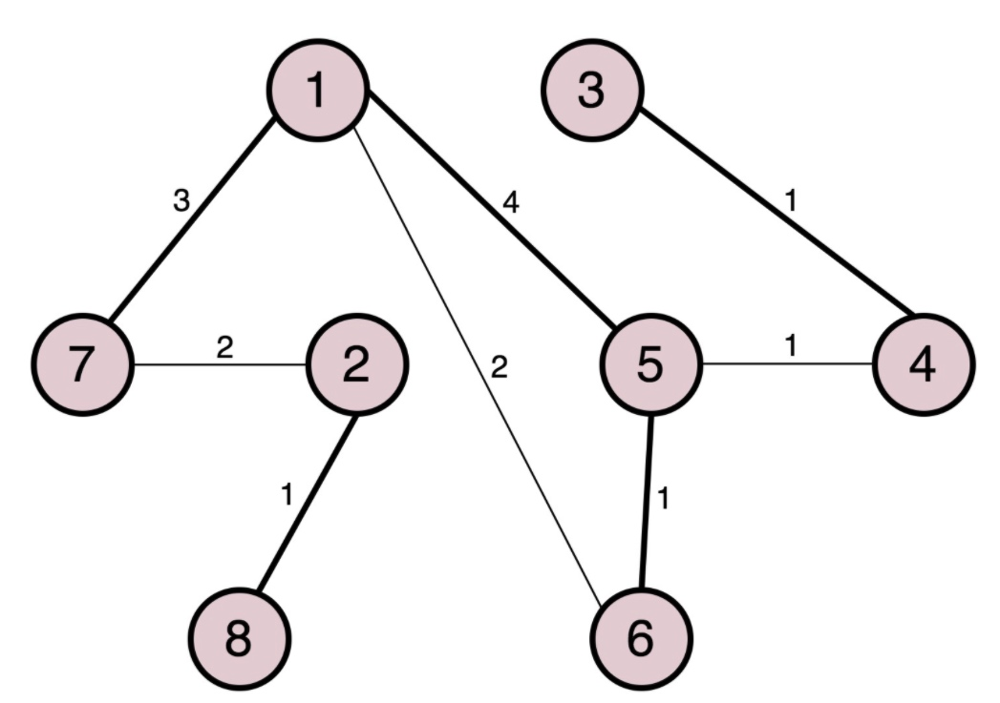
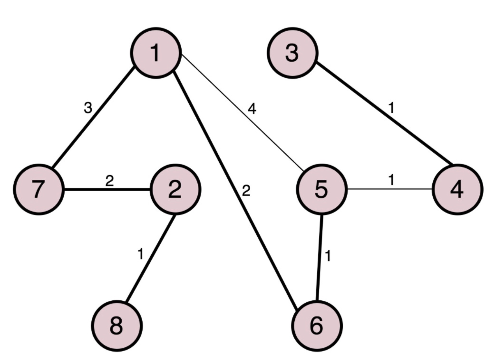
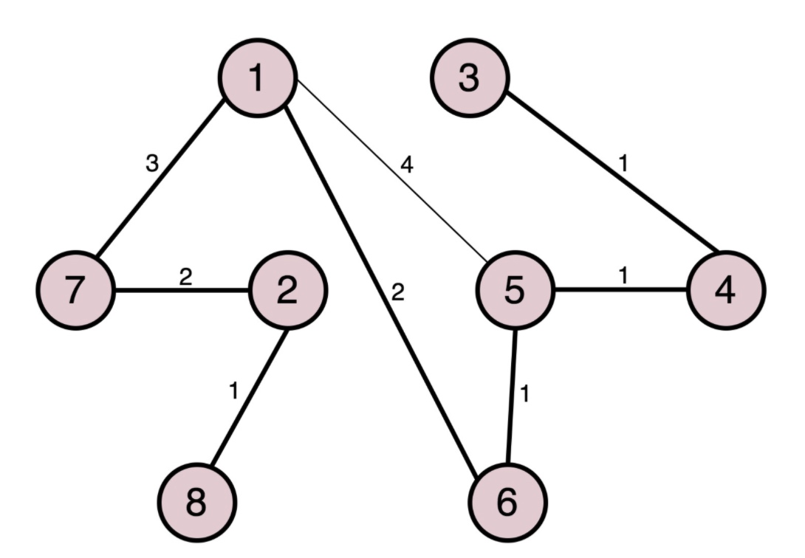
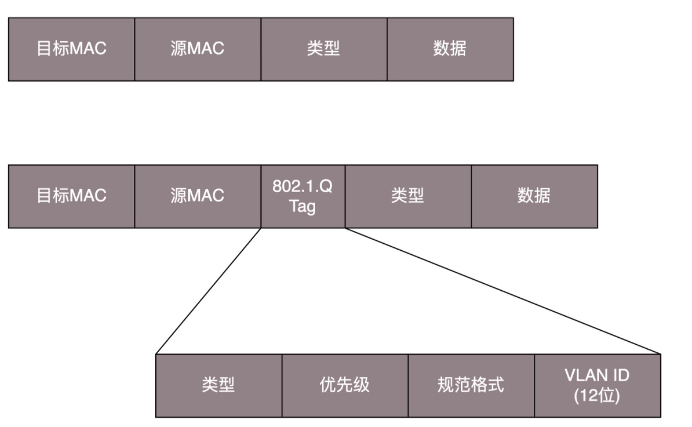
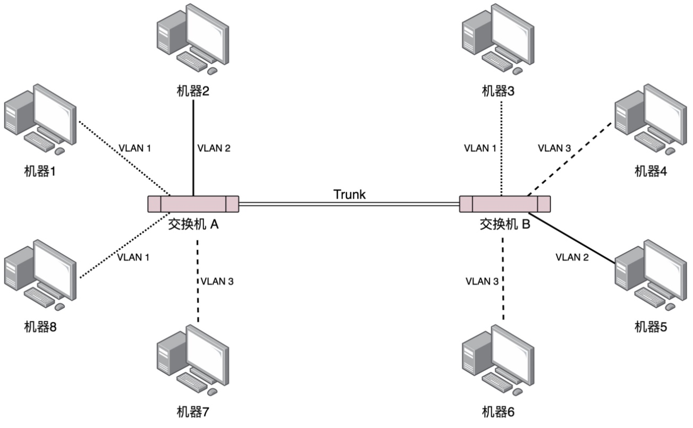

交换机
如果在办公大楼里将会有成百上千个网口，此时一台交换机已经不够用了，就需要多台交换机，交换机之间连接起来就形成了一个稍微复杂的拓扑结构。
多交换机理想环境
图中的LAN理解为Hub集线器，它会广播局域网内所有的消息给每一台机器。

如上图所示，2个交换机共同连接着3个局域网时。
当机器1想要发给机器4消息时，机器1知道机器4的IP地址但是不知道MAC地址会进行：
- 机器1发起广播，机器2和交换机A会收到。
- 交换机A发起广播交换机B和机器3会收到。
- 交换机B发起广播机器4和5会收到.
- 机器4主动回应ARP请求。
环路问题
这是比较理想的情况，但是当办公室里的交换机越来越多不可避免的会出现环路问题
例如下图，当2个交换机同时连接着2个局域网时就产生了环路。

当机器1给机器3发送ARP请求时，广播会同时被交换机A和B收到 并且都是左边的网口，他们就会记录下来 同时往交换机右侧广播，但是2个交换机广播的内容又会被对方收到，交换机就以为机器1的位置变了 变成右侧了 于是更新转发表，同时向左侧广播，然后又被彼此收到，循环往复。
交换机就无法学习记录网络的拓扑结构，每次有新的ARP请求它就会增加一个不停循环的广播包造成网络带宽越来越拥堵，并且失去交换机应有的功能。
解决环路问题 - STP 协议
在数据结构中，有一个方法叫做最小生成树。有环的我们常称为图。将图中的环破了，就生成了树。在计算机网络中，生成树的算法叫作 STP，全称 Spanning Tree Protocol。

STP协议中的概念
- RootBridge 根交换机
- DesignatedBridges 指定交换机 （通过比对后指定出来的转发交换机
- Bridge Protocol Data Units （BPDU） 网桥协议数据单元 （比对优先级的协议
- Priority Vector 优先级向量 （网络中谁与根交换机距离近。
BPDU比对过程
BPDU会拿出两个交换机各自的Priority Vector进行比对，Priority Vector包含[Root Bridge ID, Root Path Cost, Bridge ID, and Port ID]
首先比较RootBridgeID进行比较，如果是同一个就继续比较RootPathCose也就是网络中距离根节点的距离，最后比较BridgeID。
STP的工作过程

一个节点代表一个交换机他们彼此连接着，刚开始时每一个节点都认为自己是根节点。
网络管理员会先给他们设置一个优先级。
都认为是根结点之后要进行 BPDU网桥协议数据单元 比对优先级，比较失败的节点不会继续跟其他节点进行比较。
例如5和6对比，5的优先级比6高，那么5就是6的根节点，6就是5的制定交换机。其他的节点之间也一样。
下图中变粗的线就代表已经形成了点 根节点和指定交换机关系。7-1、8-2、6-5、3-4

当两个根节点相遇也需要进行比较，例如1和5相遇时 会进行比较。
1和5进行对比5落败 于是1就称为5的根节点。此时1节点下面有7、5、6
如下图：

此时，1节点下的节点会互相比较。
因为5和6的根节点都是1，此时6如果继续经过5转发到1 距离是1+4，而6根1直接相连的距离为2，所以6就不再经过5 而是直接连接1.
此时，5到1的距离是4，如果经过6到1 距离是1+3 ，低于5->1直接连接的4，所以此时6为5的根节点，消息从5发往6再发往1.

当5和4相遇，4的优先级虽然比5高，但是5的根节点1它的优先级比4要高，同时4也没有直接根1连接，所以4就成为5的指定交换机，通过5转发消息。如下图：

广播问题和安全问题
当机器多了，交换机也多了之后，虽然交换机比Hub智能一些，但是仍然可能会有一大堆广播消息。
并且不同部门之间的消息也会互相广播，如果有人进行抓包就会有泄密安全问题。
有2种解决办法：物理隔离和虚拟隔离。
物理隔离
每个部门设置单独的交换机。配置单独的子网，这样部门之间的沟通就需要路由器。
虚拟隔离 VLAN
虚拟隔离就是常说的VLAN，或者叫虚拟局域网。
使用VLAN在一个交换机上会连属于多个局域网的机器。

只需要在原来的二层的头上加一个 TAG，里面有一个 VLAN ID，一共 12 位。
12位可以划分4096个VLAN，在一些相对较小的网络环境中够用了，但是在云计算厂商或者数据中心中 4096个仍然不够。这个不在本章中讲解。
如果交换机是支持 VLAN 的，当这个交换机把二层的头取下来的时候，就能够识别这个 VLAN ID。这样只有相同 VLAN 的包，才会互相转发，不同 VLAN 的包，是看不到的。这样广播问题和安全问题就都能够解决了。
同时，交换机之间相连接的口需要设置为Trunk 口，这样它才可以转发任何VLAN的消息。

本文由 PCX
创作，采用 知识共享署名4.0 国际许可协议进行许可
本站文章除注明转载/出处外，均为本站原创或翻译，转载前请务必署名
最后编辑时间为: 2021-03-25T20:54:56+08:00